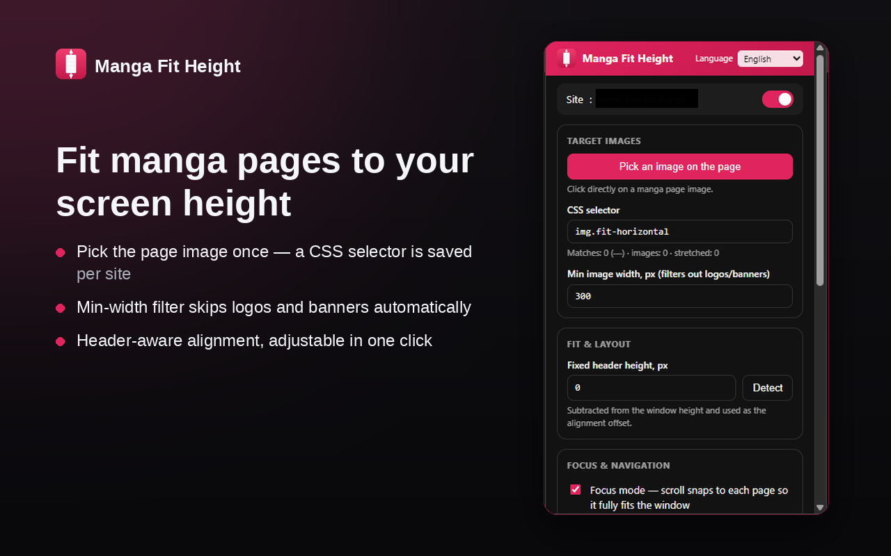
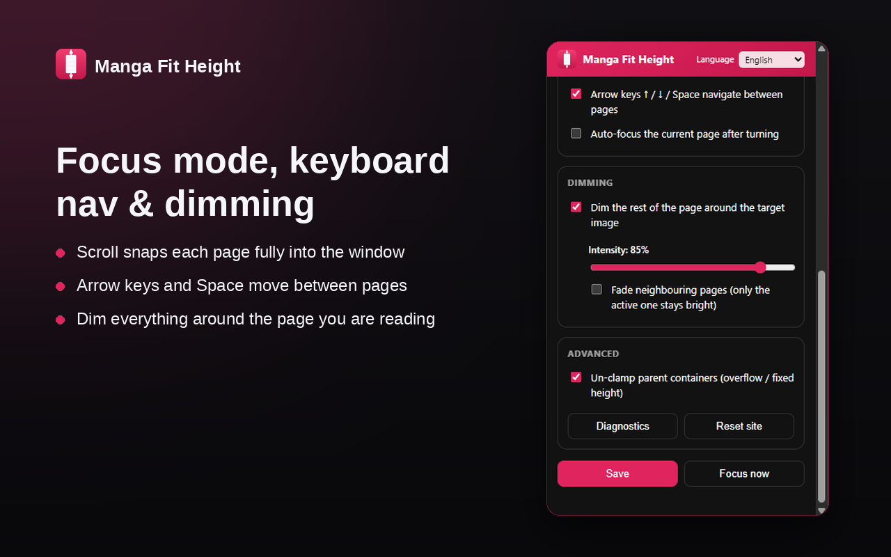

Features
- Fit to height — pages scale to the viewport height with the correct aspect ratio, no horizontal cropping.
- Element picker — click a page image; a stable CSS selector is generated and saved per site.
- Min-width filter — logos, avatars and banners are ignored automatically.
- Focus mode — scroll snaps each page fully into the window, with header-aware alignment.
- Keyboard navigation — ↑ ↓ Space move between pages.
- Dimming — darkens everything around the current page; optional fading of neighbours.
- SPA-friendly — keeps working across in-page (AJAX / pushState) page turns.
- Localized UI — English and Ukrainian, auto-detected with a manual switch.
Install from source
- Open
chrome://extensions(oredge://extensions). - Enable Developer mode.
- Load unpacked → select the
manga-fit-heightfolder.